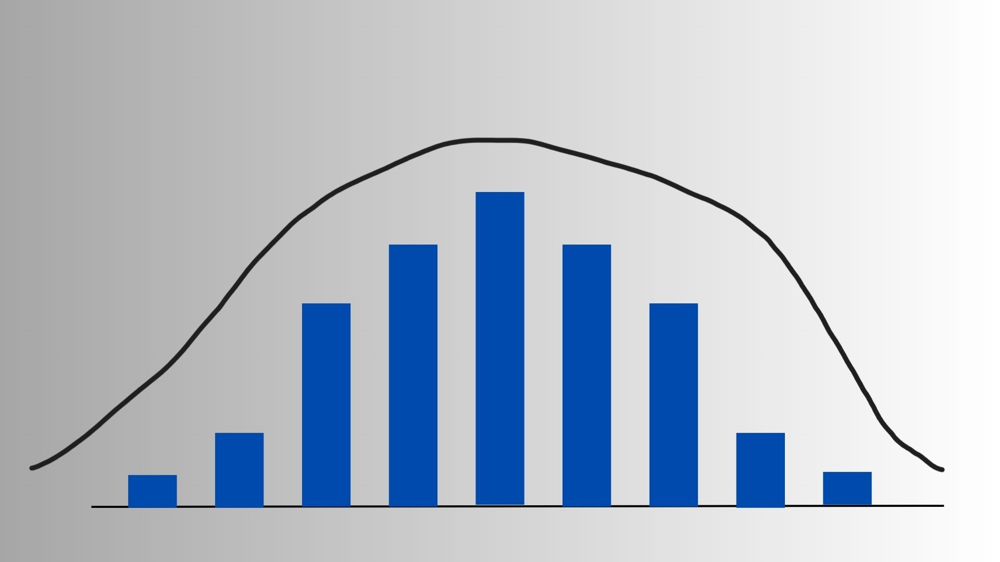

Estatística Não Paramétrica

A Estatística Não-Paramétrica é uma abordagem de análise estatística que não assume uma forma específica de distribuição para os dados. Em contraste com a Estatística Paramétrica, que depende de pressupostos rígidos, como normalidade dos dados e homogeneidade de variâncias, os métodos não paramétricos são mais flexíveis e robustos, especialmente úteis quando os dados são ordinais, categóricos ou em pequenas amostras.
Enquanto a estatística paramétrica busca estimar parâmetros de distribuições conhecidas (como média e variância na normal), a não-paramétrica utiliza principalmente ordens, rankings e frequências, evitando suposições rígidas.
Vantagens
Pode ser aplicada em situações com dados não normais ou com pequenas amostras;
Menor sensibilidade a outliers;
Ideal quando não se conhece a distribuição populacional.
Importação
import numpy as np
import pandas as pd
from scipy.stats import chisquare, kstestTestes de Aderência
Testes de aderência são ferramentas estatísticas utilizadas para avaliar se uma amostra segue uma distribuição teórica específica. Esses testes são **não paramétricos**, pois não dependem de suposições sobre os parâmetros da distribuição (como média ou variância). São úteis para:
- Verificar a validade de modelos estatísticos;
- Comparar distribuições teóricas e empíricas;
- Tomar decisões sobre qual abordagem estatística seguir (paramétrica ou não).
Teste Qui-Quadrado de Aderência
O Teste qui-quadrado de aderência é uma ferramenta estatística não paramétrica utilizada para verificar se uma distribuição observada de frequências em categorias se ajusta a uma distribuição teórica esperada.
Hipóteses
\(H₀\): Os dados seguem a distribuição teórica.
\(H₁\): Os dados não seguem a distribuição teórica.
Metodologia
Para realizar o teste, é necessário:
- Comparar as frequências observadas com as frequências esperadas, que devem ser definidas pelo pesquisador com base em uma distribuição teórica (ex: uniforme, Poisson, etc.).
- Considerar uma variável com \(k\) categorias.
Seja \(O_i\) - frequência observada na categoria \(i\)
\(E_i\): frequência esperada na categoria \(i\) , assumindo \(H_0\) verdadeira
A estatística de teste é dada por:
\(X^2 = \sum_{i=1}^{k} \frac{(O_i - E_i)^2}{E_i}\)
Essa estatística mede o grau de divergência entre os valores observados e os esperados. Se os dados estiverem de acordo com a distribuição teórica, \(X^2\) será pequeno. Quanto maior for \(X^2\), mais evidência há contra a hipótese nula.
Interpretação Estatística
Se \(O_i \approx E_i\) para todos os \(i\), então \(X^2\) tende a ser pequeno → não se rejeita \(H_0\).
Se \(O_i\) difere muito de \(E_i\) para algum \(i\), então \(X^2\) será grande → rejeita-se \(H_0\).
Distribuição da Estatística
Sob a hipótese nula, \(X^2\) segue uma distribuição qui-quadrado com \(k - 1\) graus de liberdade, assumindo que nenhum parâmetro foi estimado.
Se houver parâmetros estimados da distribuição teórica (como a média λ da Poisson), deve-se subtrair 1 grau de liberdade para cada parâmetro estimado:
\(\text{GL} = k - 1 - p \quad \text{(onde \( p \) = n° de parâmetros estimados)}\)
Decisão Estatística
Seja \(\chi^2_{k-1; \alpha}\) o valor crítico da distribuição qui-quadrado com nível de significância \(\alpha\), então:
\(\text{Rejeita-se } H_0 \text{ se } X^2 \geq \chi^2_{k-1; \alpha}\)
Esse valor crítico pode ser consultado na tabela da qui-quadrado.
Exemplo: Corrida de Cavalos
- Foram observadas 144 corridas e registrada a posição do cavalo vencedor (1 a 8).
- Espera-se que, sob hipótese de uniformidade, as vitórias estejam uniformemente distribuídas entre as 8 posições.
- Assim, a frequência esperada por posição é: \(E_i\) = 144/8 = 18
A estatística de teste será:
\(X^2 = \frac{(29-18)^2}{18} + \frac{(19-18)^2}{18} + \dots + \frac{(7-18)^2}{18} = 16{,}3\)
Graus de liberdade: ( \(df = 8 - 1 = 7\) )
Valor crítico da tabela: \(\chi^2_{7;0{,}05} = 14{,}0671 )\)
Como \(X^2 = 16{,}3 > 14{,}0671\), rejeita-se \(H_0\). Há evidências de que a distribuição das vitórias não é uniforme.
Implementação em Python
import numpy as np
from scipy.stats import chisquare
# Frequências observadas
observado = np.array([29, 19, 21, 19, 16, 22, 11, 7])
# Frequência esperada (uniforme)
esperado = np.repeat(18, 8)
# Teste Qui-Quadrado
stat, p = chisquare(f_obs=observado, f_exp=esperado)
print(f"Estatística X² = {stat:.2f}, p-valor = {p:.4f}")Conclusão
Com \(X^2 = 16{,}3\) e \(p < 0{,}05\), rejeitamos a hipótese de que as vitórias são uniformemente distribuídas entre as posições dos cavalos. O teste mostra que algumas posições vencem mais do que o esperado por acaso.
Referências
FARIAS, A. M. L. Apostila de Estatística II. Departamento de Estatística. 2017. Universidade Federal Fluminense. Velarde, L. G. C. CAVALIERE, Y. F. Apostila Inferência Estatística. Departamento de Estatística. Universidade Federal Fluminense